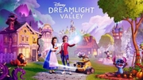

|  | |
| Tiempo de juego | No Jugado |
| Última actividad | Nunca |
| Añadido | 11/6/2024 14:41:31 |
| Modificado | 11/8/2024 17:33:58 |
| Estado de finalización | No Jugado |
| Librería | Playnite |
| Fuente | 6TB STORE |
| Plataforma | PC (Windows) |
| Fecha de lanzamiento | 12/5/2023 |
| Puntuación de la Comunidad | |
| Puntuación de la Crítica | |
| Puntuación de usuario | |
| Género | Adventure Life simulation |
| Desarrollador | Gameloft Montreal |
| Editor | Gameloft |
| Característica | Multiplayer Single-player |
| Enlaces | Wikipedia Official website IMDb |
| Tag | [Game Engine] Unity |
Disney Dreamlight Valley is a 2023 life simulation adventure game developed by Gameloft Montreal and published by Gameloft. The game has players tend to a magical valley populated by various Disney and Pixar characters who previously underwent a curse that caused them to lose their memories of their lives in the valley.
The game was released in early access for Nintendo Switch, PlayStation 4, PlayStation 5, Windows, Xbox One, and Xbox Series X/S on September 6, 2022, while the macOS version released in early access on December 6, 2022, alongside the game's second content update. It was initially planned to be a free-to-play game, with the purchase of a "Founder's Pack" or an active Xbox Game Pass subscription needed to play the game in early access. However, its early access success led to Gameloft cancelling the free-to-play plans in October 2023, making the game a premium title permanently. The game was fully released on December 5, 2023, alongside its first paid expansion, A Rift in Time. An Arcade Edition for Apple Arcade, supporting iOS, macOS and tvOS was also released the same day.
Disney Dreamlight Valley takes place in the titular "Dreamlight Valley", a magical valley with various biomes populated by Disney and Pixar characters. The game features nonlinear gameplay similar to Nintendo's Animal Crossing games where players take control of a customizable human player character living in the valley. The valley is synced to real time based on the time set on the player's console or computer. The game's multiplayer mode involves visiting other players' Valleys.
The player can explore the valley to gather resources and use their magic to clear away "Night Thorns", unwanted plants with dark magic that spawn throughout the valley. Foods can be cooked into various meals at a cooking station such as an oven or a campfire, while other resources can be crafted into materials or furniture at a crafting station. The player can eat food to replenish energy, which is required to use magic-imbued tools including a pickaxe, a shovel, a fishing rod, and a watering can; meals can replenish greater amounts of energy than foods grown, harvested, or purchased in the valley, and can make the player "well fed", which gives them a movement speed boost, increased luck at getting resource bonuses, and the ability to sprint across the valley faster by gliding on magic (albeit at an energy cost). Furniture and certain objects can be placed and rearranged in the valley or inside the player's house, and the player can also move and rotate buildings in the valley to their liking. The player can also change their outfit and appearance at any time, clothing can be customized further by the player with a clothes and furniture designer option called "Touch of Magic". Unlike in the Animal Crossing games, the player's tools, clothing, and furniture do not take up space in their inventory; tools are selected using an option wheel and never break from use, while the inventory screen contains separate "wardrobe" and "furniture" options for clothing and furniture respectively.
The player can earn a currency called "Star Coins" during gameplay, usually by selling most items in their inventory to Goofy at various stalls run by him throughout the valley. Star Coins can be spent on crops and seeds sold by Goofy at his stalls, materials sold by Kristoff at his stall, certain foods that are only available at Remy's restaurant Chez Remy or from Gaston's stall (the latter found on the A Rift in Time expansion's Eternity Isle), or on clothes and furniture sold by Scrooge McDuck at his store. They can also be spent on new buildings or building upgrades (all handled in-universe by Scrooge's "McDuck Construction" company) that provide additional benefits, such as more items available at Goofy's stalls or more space in the player's house, or on wells strewn throughout the valley that allows the player to fast travel to different biomes.
The player can interact with and befriend the villagers, including heroes and villains. The player can build up a "friendship level" with that villager by having a daily discussion with them, giving them gifts, completing quests they assign the player, and (except for characters who can only swim in the valley's waters) hanging out with them and doing activities, including gardening, mining, digging, harvesting, and fishing; doing specific activities with a land-based villager, depending on the role the player assigns the villager at friendship level two, will earn the player more resources related to that activity. Raising a friendship level (up to level ten) with a villager will give the player rewards including Star Coins, exclusive furniture and clothes, and exclusive motifs for "Touch of Magic", as well as increased resources from hanging out with them and new quests.
The game follows the player as they decide to spend some time away from the hustle and bustle of the city and return to their old rural home, falling asleep in their old backyard play area and entering a dream world as their memories of childhood return. Upon appearing in the titular Dreamlight Valley, the player is met by Merlin, who explains that Dreamlight Valley used to be full of villagers living in harmony, but after the valley's ruler disappeared, Night Thorns began growing and causing the villagers to lose their memories in an event known as "The Forgetting". While many villagers fled to their home realms for protection, others stayed and became trapped as Dreamlight Valley was overrun by Night Thorns and fell into disrepair. The player decides to help restore Dreamlight Valley and get rid of the Night Thorns.
With Merlin's help, the player is able to use their own magic, known as "Dreamlight", to clear away the Giant Night Thorns blocking access to the house resembling their own from back in reality. Recovering a memory hidden in the Night Thorns inside, the player and Merlin decide to investigate the Dream Castle, only to find the entrance blocked by giant Night Thorns. After meeting some of the villagers who stayed behind and recovering the Royal Tools, the eternal night spell over the valley is broken and the player clears away the giant Night Thorns, regaining access to the Dream Castle. Inside, they find doorways to various realms where the other villagers had fled when The Forgetting came, all sealed by Night Thorns. The player collects more Dreamlight and unlocks the doors, visiting the realms and helping the characters there with their problems, bringing them back to Dreamlight Valley to help restore it. Along the way, they help restore Dreamlight's local businesses and provide housing for the characters returning to Dreamlight Valley.
The player also opens up other regions of the valley blocked by giant Night Thorns, restoring them by returning the magic Orbs that protect the valley to their respective Pillars. As they restore Dreamlight Valley and help more villagers, the player gradually learns that they were the former ruler of Dreamlight Valley, having stopped visiting as they grew up and thus causing the Valley to fall into disrepair. The villagers also explain that the Forgetting and the appearance of the Night Thorns was caused by a dark being called the Forgotten.
As the player is about to restore the final Pillar, the Forgotten appears and steals the Orb, revealing themselves to be the player character's inner child, who was corrupted by negative emotions and fell into a deep depression. The Forgotten intends to use the Orb in a spell to create a rift that could destroy the valley. The player follows the Forgotten to their dark castle and talks to them, reminding them of their past memories and helping them accept themselves. The Forgotten shows remorse and works with the player to close the rift, and they are forgiven by the villagers and reintegrate into Dreamlight Valley with the player's help.
Jafar contacts the player, asking for their help to fix the damage he wrought on Eternity Isle, as his actions have severely damaged the space-time continuum there and he needs their help to undo it as he's trapped there until it is fixed. Merlin helps find the access route in the Dream Castle, which leads to the Stardust Port, where many docks are found that lead to other locations throughout Dreamlight Valley, and the player sets off for Eternity Isle. Once on Eternity Isle, the player gets to work under Jafar's direction to reopen the Ancient Gate that leads to more of Eternity Isle. The player also helps Goofy, Remy, and Scrooge reopen their Eternity Isle businesses that had been abandoned when The Forgetting happened. Mickey also reintroduces the player to Scramblecoin so they can play it with all the villagers.
Upon reaching the main area of the isle, Jafar reveals that the area is split in two by a rift in time that needs to be fixed before it destroys everything, and he is confined to the palace at the other end. Jafar directs them to recover the Royal Hourglass, a new Royal Tool that will help mend all the damage on Eternity Isle, and anything that appears back in Dreamlight Valley. However, EVE is in possession of the Royal Hourglass and the player must gain her trust before she is willing to return it to them, as not even telling her the player is friends with WALL-E convinces her to hand it over as she was told by the player when they were younger to guard it until further notice. Once the player completes regaining EVE's trust, they get the Royal Hourglass, and after recovering the first of three Jewels of Time to help repair the bridge leading to the rest of the isle, they are granted access to the rest of Eternity Isle, including the biomes where Gaston and Rapunzel were stranded in the Glittering Dunes and the Wild Tangle, and continue to fix all the damage wrought on the isle by Jafar, and what has developed back in Dreamlight Valley as a result of recovering the new Royal Tool.
Once the Royal Hourglass is fully repowered with the three Jewels of Time, the player clears away the time anomalies around the palace, freeing Jafar. Unfortunately, this was what he wanted as he was now free to hunt for the legendary treasure known as the Spark of Imagination. He escapes, for now, while the player prepares to deal with him in the future.
Disney Dreamlight Valley features several Disney and Pixar characters who reside in the valley as "villagers".
Several other characters have been announced to be added in later updates:
Additionally, Pua and Heihei from Moana and Figaro, originally from Pinocchio and Minnie Mouse's pet in later media, all appear as unlockable companions (pets) for the player, with Pua unlocked during one of Moana's friendship quests, and Heihei and Figaro being premium purchases.
Disney Dreamlight Valley was developed by Gameloft Montreal as a life simulation adventure game. Manea Castet, Game Manager of Disney Dreamlight Valley at Gameloft Montreal explained, "Our development team is a big family of Disney and Pixar fans and have poured all of our passion into the development of Disney Dreamlight Valley, especially in the way we depict characters and their story arcs," and continued, "We can't wait for fans to join the Early Access this summer and help us bring this new ever-evolving Disney and Pixar-inspired world to our excited community."
Announced in June 2022, the game was released in early access for Nintendo Switch, PlayStation 4, PlayStation 5, Windows, Xbox One, and Xbox Series X/S on September 6, 2022, while the macOS version released in early access on December 6, 2022, alongside the game's second content update. A physical release for the console versions featuring exclusive content and physical extras, titled the Cozy Edition, was released for Nintendo Switch in North America on October 27, 2023, and will be globally released for Switch, PlayStation platforms, and Xbox platforms on November 10, 2023. The PlayStation and Xbox Cozy Edition releases contain a disc, while the Switch's Cozy Edition is a code-in-a-box release (containing a printed code instead of a Switch Game Card in the box) due to platform limitations.
The game was initially planned to be a free-to-play game after leaving early access. However, in a blog post published in October 2023, Gameloft announced that they had decided to reverse their free-to-play plans, leaving the game as a pay-for title upon full release on December 5, 2023. In the same post, Gameloft also announced that a new expansion titled A Rift in Time will be added on the same day as the full release, which will be included with a new Gold Edition digital release and will be a separate purchase for all other players.
The game features the voice acting of Ashley Adler, Tony Anselmo, Tim Allen, Jeff Bennett, Jodi Benson, Danielle Bisutti, Abby Trott, Ben Burtt, Cam Clarke, Chris Sanders, Pat Carroll, Kaitlyn Robrock, Auli'i Cravalho, Enn Reitel, Barbara Dirickson, Patton Oswalt, Bill Farmer, Donna Murphy, Jake Green, Matt Lowe, Jim Hanks, Moira Kelly, Jess Harnell, Bret Iwan, James Horan, Christopher Daniel Barnes, Jonathan Freeman, Richard White, Mandy Moore, Chris Sarandon, Stephanie Beatriz, Carlos Alazraqui & John Goodman reprising their roles from various Disney films and television series. Dreamlight Valley marks the final appearance of Pat Carroll as Ursula, following her death in 2022.
On September 6, 2022, Gameloft released a trailer announcing three "Founder's Packs", which were available during the game's early access period. The Founder's Packs, which were required for early access, included Moonstones (the game's premium currency), wearable items, decorative items, cosmetics animal companions (a "celestial" sea turtle animal companion for Deluxe and Ultimate and a "regal" fox animal companion for Ultimate only), a jersey, and a Mickey Mouse headband (for Deluxe and Ultimate). Additionally, Founder's Pack players received the Gold Edition's exclusive cosmetic items (consisting of a "flowery" capybara companion, a "summer flowery cottage" house style, and wearable artist's overalls for the player) and an additional 2,500 Moonstones.
Dreamlight Valley's first paid expansion, A Rift in Time, was released on December 5, 2023, alongside the full release of the game. It adds a new area called "Eternity Isle" featuring new biomes and new villagers.
In October 2024, Disney Dreamlight Valley introduced several upcoming expansions and updates in a showcase. The Storybook Vale expansion, set to launch on November 20, 2024, will introduce new characters, including Flynn Rider, Merida, Hades, and Maleficent. A second content update, titled The Unwritten Realms, is scheduled for summer 2025. Additionally, the Sew Delightful free update, arriving on December 4, 2024, will add the Frost & Fairies Star Path and floating islands to expand biome space. Future content planned for 2025 will feature characters and themes from Aladdin, Alice in Wonderland, and Peter Pan.
Disney Dreamlight Valley received a positive reception from critics upon its early access release in September 2022.
Ivy Liscomb of Wirecutter complimented Disney Dreamlight Valley for not replicating the Animal Crossing series, appreciating the music, story and gameplay, calling Disney Dreamlight Valley "appealing for both kids and adults alike," and wrote positively about the amount of quests and the customizable content. Travis Northrup of IGN called the game an "awesome life simulator that flexes its iconic characters to riveting, satisfying effect," asserted the story manages to be clever and creative, appreciated the relationships players can forge with the villagers across their different quests, and complimented the customization of the player character and their environment, stating, "Disney Dreamlight Valley feels impressively like a finished product for an early access game." Carrie Lambertsen of Screen Rant said Disney Dreamlight Valley "quickly became one of the most popular of cozy games," found the gameplay to be entertaining and peaceful, saying the ability to farm, gather ressources, craft, and decorate make the game enjoyable, and called the player customization pleasant and immersive.
Holly Alice of Pocket Tactics named Disney Dreamlight Valley one of the best life simulation games available on Nintendo Switch and mobile devices. Claire Crossman of Common Sense Media praised the game's depiction of positive messages and role models, saying the game promotes the importance of helping others and encourages creative expression, applauding the diverse representations across the customization of the player character, and appreciating the interactions between the player character and their environment. Swapna Krishna of Wired said Disney Dreamlight Valley succeeds to exceed the limits imposed by the life-simulation genre regarding what players can do through its quests, compared it to the life-simulation indie game Cozy Grove, saying it manages to be the "perfect balance between binge-playing and pacing yourself" owing to the combination of the life-simulation genre and the adventure genre.
Tom Steel of CBR.com compared Disney Dreamlight Valley to Stardew Valley, saying while the game is immersive and nostalgic though Disney properties, it also depicts an "interesting" story and embodies the quality of being a "perfect game for whatever the player's mood requires" like Stardew Valley. Sam Loveridge of GamesRadar+ appreciated the quality-to-life improvements to the game's tools in contrast to Animal Crossing and liked the presence of the Disney characters that lived in the titular Dreamlight Valley, which she said had "some truly brilliant dialogue and narrative flourishes," while saying that certain resources were too scarce. Josh Broadwell of Nintendo Life wrote that he found the game to have "strong worldbuilding", finding its plot to be "an unexpected and even poignant bit of commentary about growing up in general", but believed that the game's Switch optimization was subpar with significant menu lag and game crashes.
Disney Dreamlight Valley received a positive reception from critics upon its full-release in December 2023.
Alexandra O'Leary of Game Rant found Disney Dreamlight Valley to be a "great choice for cozy gamers" who want to experience a calm exploration-based game, said while the game is non-linear, the selection of quests remains substantial, and wrote the world and characters represent "Disney at its most immersive level so far." Christina Alexander of IGN compared the game to the Animal Crossing series, found enjoyable how the player can interact with their inventory, complimented the outfits available to customize the player's avatar, and described the game as one of the best Disney games released on Nintendo Switch.
Jack Brassell of Pocket Gamer gave Disney Dreamlight Valley Arcade Edition a score of 4.5/5 stars and described it as an engaging life simulation experience, appreciated the setting, gameplay, and the cosmetics, saying the game offers the "best aspects" of The Sims franchise to iPhone and iPad devices. Mikhail Madnani of TouchArcade also reviewed the Apple Arcade version of the game and gave it the score of 4/5 stars, calling it one of the "best additions to the service in a long time", found the gameplay to be relaxing, complimented the absence of in-app purchases, and described the expansion "A Rift in Time" as "pretty amazing so far".
On September 6, 2022, Disney Dreamlight Valley topped the Steam sales charts. On September 15, 2022, the official Disney Dreamlight Valley Twitter account announced that over one million players have played the game ten days after its release.
In December 2023, Gameloft revealed that over five million players have played during the early access period of Disney Dreamlight Valley. Steam later announced that Disney Dreamlight Valley was one of the top Early Access graduates by gross revenue on the service in 2023.